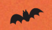

<!DOCTYPE html>
<html lang="zh-Hant">
<head>
    <meta charset="UTF-8"/>
    <title>找出與你最契合的 Monster</title>
    <link rel="stylesheet" href="css/normalize.css">
    <link rel="stylesheet" href="css/style.css">
    <script src="js/main.js" type="module"></script>
</head>
<body>

<div class="main">
    <div class="contain">
        <!-- HTML -->
        <div class="progress-watercolor">
            <div class="progress-watercolor__fill" style="width: 40%;"></div>
<!--            
<!--                 class="progress-watercolor__icon"-->
<!--                 alt="進度圖示">-->
        </div>

        <div id="quiz"></div>
        <div id="result"></div>
    </div>
</div>
</body>
</html>
<!--<!DOCTYPE html>-->
<!--<html lang="zh-Hant">-->
<!--<head>-->
<!--    <meta charset="UTF-8" />-->
<!--    <title>靜態頁面小遊戲示範</title>-->
<!--    <style>-->
<!--        body {-->
<!--            background: #FFF8E7 url('common/image/gpt_bg.png') center/cover; /* 水彩紋理示意圖，可換成你的 PNG */-->
<!--            font-family: 'Noto Sans TC', sans-serif;-->
<!--            color: #333;-->
<!--            margin: 0;-->
<!--            padding: 0;-->
<!--        }-->
<!--        .progress {-->
<!--            margin: 16px;-->
<!--            height: 8px;-->
<!--            background: rgba(0,0,0,0.1);-->
<!--            border-radius: 4px;-->
<!--            overflow: hidden;-->
<!--        }-->
<!--        .progress__fill {-->
<!--            width: 20%; /* 動態控制 */-->
<!--            height: 100%;-->
<!--            background: #F8C6D0;-->
<!--            transition: width .3s;-->
<!--        }-->
<!--        .container {-->
<!--            max-width: 640px;-->
<!--            margin: 32px auto;-->
<!--            padding: 0 16px;-->
<!--        }-->
<!--        .card {-->
<!--            background: #FFF8E7;-->
<!--            border: 2px solid rgba(0,0,0,0.7);-->
<!--            border-radius: 12px;-->
<!--            box-shadow: 0 4px 8px rgba(0,0,0,0.1);-->
<!--            padding: 24px;-->
<!--            margin-bottom: 24px;-->
<!--            line-height: 1.5;-->
<!--        }-->
<!--        .question {-->
<!--            font-size: 1.25rem;-->
<!--            margin-bottom: 16px;-->
<!--        }-->
<!--        .options {-->
<!--            display: flex;-->
<!--            justify-content: space-around;-->
<!--            margin: 16px 0;-->
<!--        }-->
<!--        .option-btn {-->
<!--            flex: 1;-->
<!--            margin: 0 6px;-->
<!--            padding: 12px 0;-->
<!--            background: #FFF;-->
<!--            border: 1px solid rgba(0,0,0,0.7);-->
<!--            border-radius: 8px;-->
<!--            font-weight: 600;-->
<!--            cursor: pointer;-->
<!--            transition: background .2s;-->
<!--            text-align: center;-->
<!--        }-->
<!--        .option-btn:hover {-->
<!--            background: #FCE38A;-->
<!--        }-->
<!--        .option-btn:active {-->
<!--            background: #B8E0D2;-->
<!--        }-->
<!--        .replay {-->
<!--            display: block;-->
<!--            width: 100%;-->
<!--            padding: 12px 0;-->
<!--            background: #F8C6D0;-->
<!--            border: none;-->
<!--            border-radius: 8px;-->
<!--            font-size: 1rem;-->
<!--            font-weight: 600;-->
<!--            cursor: pointer;-->
<!--            text-align: center;-->
<!--            margin-top: 32px;-->
<!--            text-decoration: none;-->
<!--            color: #333;-->
<!--        }-->
<!--    </style>-->
<!--</head>-->
<!--<body>-->
<!--<div class="container">-->
<!--    <div class="progress">-->
<!--        <div class="progress__fill"></div>-->
<!--    </div>-->

<!--    <div class="card">-->
<!--        <div class="question">-->
<!--            你比較喜歡的 Monster 特質是？-->
<!--        </div>-->
<!--        <div class="options">-->
<!--            <div class="option-btn">黏人可愛</div>-->
<!--            <div class="option-btn">聽話好管</div>-->
<!--            <div class="option-btn">自由奔放</div>-->
<!--        </div>-->
<!--    </div>-->

<!--    &lt;!&ndash; 結果示範 &ndash;&gt;-->
<!--    &lt;!&ndash;-->
<!--    <div class="card">-->
<!--      <div class="question">-->
<!--        你的 Monster 是：Han-il（天使版）-->
<!--      </div>-->
<!--      -->
<!--      <a href="#" class="replay">再玩一次</a>-->
<!--    </div>-->
<!--    &ndash;&gt;-->
<!--</div>-->
<!--</body>-->
<!--</html>-->
